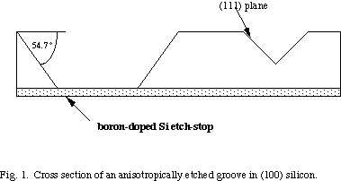
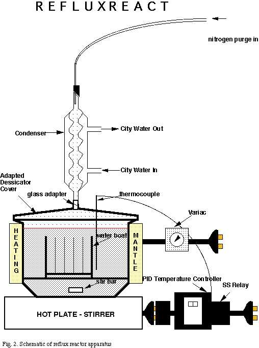
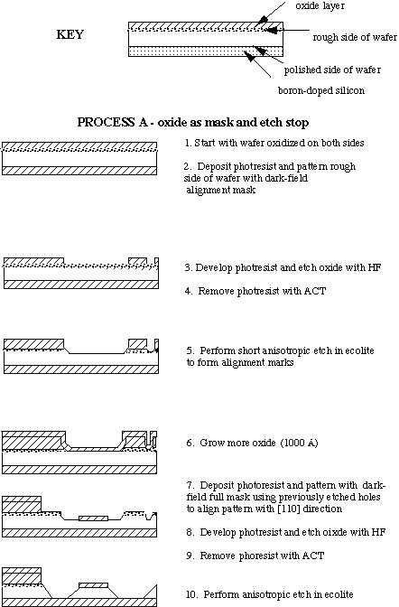
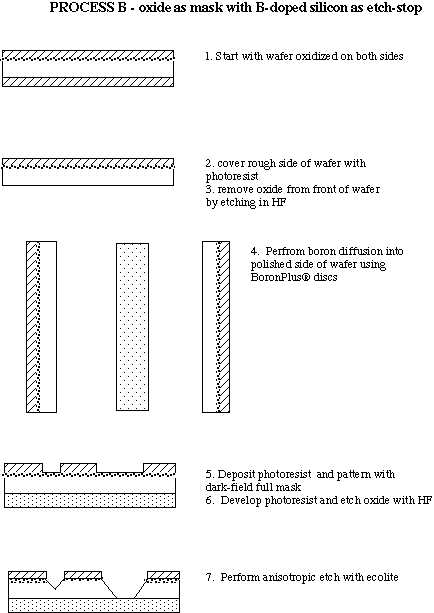
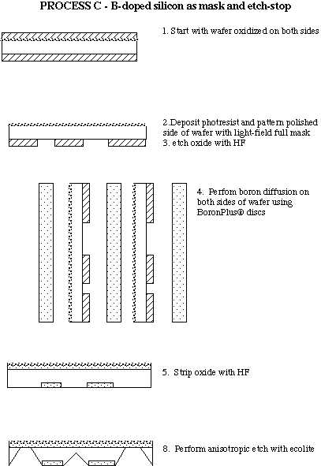

A report
submitted in partial fulfillment of the requirements
of an E. E. Just Internship
by
Simone Ferdinand
under the direction of
Professor Christopher Levey
Thayer School of Engineering
Dartmouth College
Hanover NH 03755
USA
June 1996
Abstract
| A reflux reactor developed to perform wet anisotropic etching of single crystal silicon is described. Design and processing of test structures is discussed and the results of etching experiments using Ecolite, an ethanolamine based etchant developed at IBM, are presented. |
Introduction
Anisotropic etching of single crystal silicon has been used in bulk micromachining to form trenches, channels, membranes and diffraction gratings. The fundamental feature of the anisotropy is that the rate of reaction in the (100) silicon plane is 50 to 100 times faster than the rate in the (111) plane. Etchants also generally slow down or stop etching at high boron concentrations (> 10^19 atoms/cm^2<, making it possible to fabricate thin boron-doped silicon structures on the surface of thick silicon substrates.

The (111) faces intersect the wafer surface along the <110> directions and form an angle with the surface of 54.7deg.. Features aligned in the <110> direction etch neatly, while those at various angles to the <110> direction are subject to high etch rates from the sides which destroy the integrity of the feature. Thus, alignment of features with the <110> direction is one of the goals of wafer processing.
Common etchants include KOH, TMAH (tetra-methyl ammonium hydroxide), EDP (ethylenediamine-pyrocatechol) and hydrazine. These etchants have been judged as unduly hazardous to work with and difficult to dispose of. Etching with KOH has been judged as lacking in controlled uniformity and boron specificity. Ecolite was submitted as an 'environmentally compatible' etchant because it is relatively non-corrosive and non-toxic. The 'active ingredient' in ecolite is ethanolamine, with gallic acid added as a complexing agent, pyrazine as a catalyst, and FC-129 added as a surfactant. A reflux reactor was built to allow the reaction to occur safely at the refluxing temperature for ecolite where etch rates of single crystal (100) silicon were reported to be as high as 140um/hr. Two formulations of ecolite were tested: one commercially available formulation and one `home-made' batch, formulated from the starting materials in the lab.
Materials and Methods
Reflux reactor (Fig. 2)
The reflux reactor in which the anisotropic etching was performed consisted of an adapted vacuum dessicator, standard taper adapter and condenser purchased from Ace Glass; a column heating mantle purchased from GlasCol; a wafer boat purchased from Flouroware; a temperature controller and thermocouple purchased from Omegalux electric heaters and lab equipment already owned by the Micromachining Lab including a hot plate/stirrer, variac and city water and nitrogen gas inputs.
The dessicator purchased had an i.d. of 165mm and a height of 250mm. These dimensions were judged suitable since whole silicon wafers be etched with a relatively small volume of etchant. The knob on the cover of the vacuum dessicator was lathed by engineers at Ace Glass to form a female 29/42 standard taper joint. A glass adapter with a male 29/42 end and a female 24/40 joint was inserted in the cover so that the female condenser taper would fit into it. A 1/8" diameter hole was drilled through the dessicator cover to accommodate the 1/16" diameter thermocouple. A stir bar was placed in the bottom of the dessicator to stir the etchant and the end of the wafer boat was sawed off so that it would fit inside the dessicator.
The temperature of the etchant was controlled by a PID temperature controller. The liquid temperature was monitored by a PTFE-coated J-type thermocouple and the temperature controller was wired so that it controlled the on-off action of the hotplate until the setpoint temperature was achieved. The hotplate power output was kept at a maximum (900W). A solid-state relay was also wired into the circuitry because of the relatively high current (8-9 amps) drawn by the hotplate.
Heat for the reactor was also supplied via a heating mantle which was wrapped tightly around the outside of the dessicator and which had a maximum power rating of 360W and 120V. The input voltage of the heating mantle was controlled using a variac. This allowed the rate of temperature increase and the maximum temperature to be controlled by manual means. When the etchant was being heated from room to reflux temperature the variac setting was first set at 120V and then gradually reduced. The other primary purposed of the heating mantle was to provide insulation for the dessicator. Without insulation we found that the maximum liquid temperature achievable was 80deg.C while with the mantle temperatures of 130deg.C were achieved within 30 minutes of heating. When cooling of the reaction vessel was required the heating mantle was removed to reduce the cooling time. The circumference of the dessicator was larger than the width of the heating mantle so that once the mantle was in place a window of about 10 cm was left open through which one could see the reaction progressing.
Cooling water for the condenser had to be tapped off the city water supply since the only water available from the taps in the solid-state lab was deionized. This was achieved by attaching a valve and piping to one of the existing joints and running plastic tubing from the piping to the condenser. A nitrogen purge was also added to discourage air from entering the reactor via the top of the condenser column. Since ecolite reacts with carbon dioxide in the air, its effectiveness is reduced by contact with air. A flow meter was attached to an existing nitrogen line for this purpose. Flexible plastic tubing from the flow meter was inserted in the top of the condenser column with a rubber stopper as a crude pressure release valve.
Another form of nitrogen purge (hereafter called 'quick purge') was devised to quickly purge the air out of the reaction vessel anytime the dessicator cover was removed (since this allowed carbon dioxide to enter the vessel and contaminate the ecolite). This was simply a piece of tubing with one end which connected to the nitrogen line where a nitrogen gun had been removed. The other end fitted tightly over the top of the condenser, allowing the entire reaction vessel to be purged once nitrogen was flowing. The nitrogen flow for this purge was controlled from the main nitrogen valve.

Mask Design and Processing
The mask was designed on L-edit and is documented in figures 3-8. In all cases, features indicate exposed silicon and areas without features indicate boron-doped silicon or silicon dioxide. The alignment mask was designed with the intention of helping to align the full mask with the wafer <110> direction. It contains radial patterns (`quarter wheels') which indicate with lines at various angles to horizontal and vertical. Since the lines are actually triangular wedges, each line actually represents two distinct angles. The relative rates of undercutting of these lines is an indication of the closeness to the <110> direction since lines parallel to the <110> flat experience zero undercutting and lines at 45deg. to the <110> direction experience the most. This is the same idea behind the feature `lines' which is a series of lines angled from -7deg. to 7deg. from vertical. The squares are also angled at various angles to the vertical, the idea being that the square which is closest to the <110> direction will experience the least corner-cutting. The circles in this will be undercut to form square edges in the <110> direction, given enough time. These squares line up with the straight-edged grid features in the center of the full mask (see figure 6).
The full mask (see figure 4) contains some features inspired from the literature: the 'pyramid trunks' by Mayer et. al. ; the 'double cantilevers' by Xiang-Zheng Tu; the feature 'lines' by Zavrachy et. al. There are also unique features such as the capillaries which are designed so that undercutting of oxide or boron-doped silicon will produce oxide or boron-doped silicon bridges over channels in the silicon. The thought is that these channels can be used to carry liquid which will be drawn into the gaps between the bridges via capillary action. As is evaporates furthur liquid is drawn up, and the device is cooled. The bridges help to cool the device by conducting heat away from it. The little spring is also unique. It was designed so that the spaces between exposed silicon are larger at the corners of the spring and smaller in the center to compensate for corner-cutting. The spring is designed to be undercut so it is free from the silicon substrate but held down at its center. The large springs (see figure 5) were designed so that they would be freed from the substrate by etching all the way through the wafer. One structure was designed with compensation structures to compensate for convex corner-cutting: the areas of silicon protected by boron-doping or oxide are larger at the corners than in the middle of the spring.
The masks were fabricated using high-quality, 4000 dots per square inch transparencies printed at Pretech Graphics (Wilder, VT). The transparencies were used to make one dark-field alignment mask, one dark-field full mask and one light-field full mask. The patterns were transferred to photoresist-coated, chrome-on-glass masks. A mask exposure time of 8 seconds, followed by a 2 second blanket exposure seemed to work well for the dark-field masks, removing all unwanted photoresist and creating well defined patterns. A 2.5 second blanket exposure worked better for the light-field mask. The chrome was then etched away using CR7 for 1 minute 10 seconds and the photresist was removed by immersion on ACT for 1 minute.
Wafer Processing and Alignment
One of the major concerns with performing anisotropic etching on (100) silicon wafers is that the mask features have to be aligned with the <110> flat on the side of the wafer. Misalignment causes serious undercutting of features. The dependence of undercutting on the misalignment angle is documented in Bean, October 1978. Several methods of alignment were tried and compared during the wafer processing:
Method 1: The first method was simply to place the wafer flat directly under one of the larger straight-edged features of the mask and try to align the flat with the feature. The wafer was brought almost into contact with the mask (which was fixed) and the focus on the microscope was adjusted so that both the feature and the wafer flat were almost in focus. Then the stage [[theta]] adjustment was used to adjust the direction of the wafer flat until it was parallel to the feature along the entire length of the feature. The wafer was brought into contact with the mask and exposed.
Method 2: This method was devised because it was impossible to use the first method to align dark-field masks with only a few features (this was the case with the alignment mask). The mask was placed in the mask holder. Using only one of the travel directions (x or y), the microscope travel arm was scanned along the length of a large mask feature and any angular discrepancy between the microscope travel path and feature was noted. The mask was removed from the holder and adjusted in a direction that reduced said angular discrepancy. This process was repeated until the microscope traveled parallel to the feature. The microscope was then focused on the wafer flat and the travel arm was used to scan along the wafer flat. The stage [[theta]]-adjustment was used to adjust the wafer until the microscope traveled parallel to the wafer edge. The wafer was brought into contact with the mask and exposed.
Method 3: This method utilized a microscope objective with a cross hairs. The mask was placed in the mask holder and fixed. The objective was rotated until the cross hairs were parallel to a straight-edged mask feature. The microscope was refocused on the wafer flat. Without touching the objective, the stage [[theta]]-adjustment was used to rotate the wafer until the flat was parallel to the cross-hairs. The wafer was brought into contact with the mask and exposed.
Method 4: This method utilized a separate alignment mask (see process A below). The alignment mask was aligned using method 2 above and the patterned wafer was etched for at least 20 minutes in ecolite and oxidized. The etched features `lines' (see figure 7 ) were examined under the microscope and the line with the smallest (zero) degree of undercutting was selected as being parallel to the <110> direction. The mask was fixed in the mask holder and the wafer was brought almost into contact. The microscope focus was adjusted until a straight-edged feature on the mask and the line on the wafer were both almost in focus. The stage [[theta]]-adjustment was used to rotate the wafer until the mask feature and line were parallel. The wafer was brought into contact and exposed.
Method 5: This method also utilized the separate alignment mask (see process A below). The alignment mask was aligned using method 2 above and the patterned wafer was etched for at least 20 minutes in ecolite and oxidized. The 200um diameter circles had been undercut to form square edges. The wafer was brought almost into contact. The undercut edges of the circles and the corresponding grid features on the full mask (see figure 4) were both brought almost into focus in the microscope. The stage [[theta]]-adjustment was used to rotate the wafer until the grid lines and undercut edges were parallel.
The wafers were processed using three different processing procedures designed to test the effectiveness of silicon dioxide as an etch mask and etch-stop versus boron-doped silicon. Process A was used to test the effectiveness of using a separate alignment mask to align features in the <110> direction. It was also the only process suitable for producing the large springs by etching all the way through the wafer. Free structures (bridges, small springs and cantilevers) in silicon dioxide and polished-side silicon dioxide diaphragms were also possible using this series of processing steps. Three full wafers were processed using process A.
Using process B it was possible to produce free silicon dioxide structures and boron-doped silicon diaphragms on the polished side of the wafer. Processes A and B used silicon dioxide as the masking layer for the anisotropic silicon etch with ecolite. In contrast, process C used boron-doped silicon as the masking layer. Process C also required the use of a light-field mask in contrast to processes A and B which used dark-field masks. Boron-doped silicon diaphragms on the rough side of the wafer and boron-doped silicon free structures were fabricated using process C. Two full wafers were processed for each of the processes B and C.


Positive photoresist was used in all cases and all silicon dioxide was grown using wet oxide processing. The procedure for growing oxide was standard and is accessible on the internet at http://hypatia.dartmouth.edu/levey/ssml/equipment/furnace/wetoxide.html. The process will not be described here. In all three processes we started with oxidized wafers. Two of the process A wafers started with 15500Å of oxide (grown for 1 hr 20 min. at 1100deg.C)and one started with 5600Å (grown for 6 hr 20 min. at 1150deg.C). One of the process B wafers started with 15500Å of oxide and the other started with 5600Å of oxide. Both of the process C wafers started with 15500Å of oxide.
The boron-doping process used is as follows:
1. Arrange wafers and BoronPlusreg. discs in alternate slots in tray. Since the slots for the wafers are too wide, add a small wafer fragment to each slot with a wafer to prevent wobbling of the wafer. Make sure that the wafers are not touching the boron discs otherwise they will fuse permanently to them during the doping process.
2. Place the tray with the wafers in the center of the bottom furnace tube at 400deg.C. Purge furnace with nitrogen (10 SCFH for 10 minutes).
3. Adjust flow to 98% nitrogen and 2% oxygen: Adjust coarse flow meter to 3.2 SCFH nitrogen and sensitive flow meter to full scale (150) oxygen flow (this corresponds to 26 ml/min. of oxygen). Ramp temperature to 1125deg.C (725deg. on the dial).
4. Hold at 1125deg.C for five hours.
5. Adjust flow to 50% nitrogen and 50% oxygen for 32 minutes: Close oxygen valve. Set nitrogen flow to 2 SCFH. Adjust oxygen valve until coarse flow meter reads 4 SCFH and immediately start ramp down in temperature by setting furnace temperature to 600deg.C (200deg. on dial).
6. After 32 minutes adjust flow once again to 98% nitrogen and 2% oxygen. Let furnace cool to 600deg.C.
7. Once temperature has reached 600deg.C, pull wafer tray to edge of furnace tube and let cool for 10 minutes.
8. Use aluminum holder to transfer tray to cooling tube. Let wafers cool another 5 minutes before removing from the tray.
KOH
One experiment was performed with KOH as the etchant for purposes of comparison with ecolite. A solution of 30% KOH was made up with 480g KOH and 1120ml of water. This solution was introduced to the reaction vessel and the dessicator cover and condenser were attached. A temperature of 75deg.C was maintained for 5 hrs.
Ecolite
Four runs with ecolite were performed for different times and with various wafer patterns. The ecolite used was type EGS-1 developed at IBM (Linde, Austin, April 1992; U.S. patent no.4,941,941) and made up by the now-defunct commercial distributor Ecolite Etchants and obtained from Professor Varhueat at the University of Vermont. This formulation is described as having low catalyst and high surfactant levels and etches silicon at 100um per hour.
The same procedure was used for each of the four runs.
1. Prepare wafer fragments and place in wafer boat.
2. Introduce wafer boat and stir bar to empty dessicator. It is useful to clip plastic blue forceps to each of the wafers for easy removal from the reaction vessel once the reaction is over. Wrap heating mantle around dessicator and tighten laces.
3. Cover with cover and condenser. 'Quick purge' for 2 minutes at full N2 pressure followed by 5 minutes at low pressure. (Note: Low pressure was determined as a pressure that would allow the cover to fit on the dessicator without shifting to release gas pressure so that the nitrogen escaped through the thermocouple hole in the cover).
4. Remove cover and quickly pour ecolite into vessel to desired level.
5. 'Quick purge' the ecolite container at maximum pressure by placing the flexible tubing well into the container and allowing nitrogen to flow for 3 minutes. (Note: do this only if there is ecolite left in the container)
6. Recap container. 'Quick purge' reaction vessel as in 3. Replace 'quick purge' tubing with nitrogen gun (this prevents nitrogen from being lost), and turn main nitrogen valve pressure to full. Insert nitrogen purge line with rubber stopper into condenser. Turn pressure to 1/3 of full scale on valve in cupboard under hood.
7. Start heating by turning on variac to 120V, setting hotplate to maximum power and temperature controller setpoint to 124deg.C. Make sure stir bar is working.
8. Monitor temperature and decrease variac setting as temperature gets closer to 124deg.C till it's about 60V.
9. Start timer when ecolite starts to bubble (about 119deg.C).
10. Let reaction continue. Once timer goes off, turn off variac and change temperature controller setpoint to 24deg.C. Remove heating mantle to allow faster cooling.
11. Once temperature has fallen to 60deg.C (about 1 hour), remove thermocouple from vessel. Remove dessicator cover with condenser and place at side. Quickly and carefully transfer wafer fragments to beaker full of water. Replace dessicator cover.
12. Transfer wafer fragments to successive beakers of water until the wafers are clean. Then transfer the wafers to a beaker containing pure methanol.
13. Remove the fragments from the methanol and let them dry on a hot plate at 110deg.C for a couple of minutes.
14. Remove fragments from hot plate and examine under microscope.
15. If the same batch of ecolite will be used the following day, remove the cover and 'quick purge' by placing the flexible tubing in the dessicator with full nitrogen pressure in the dessicator. Place an unadapted dessicator cover on top of the tubing so that the cover covers as much of the dessicator as possible. This unadapted dessicator cover is a plain vacuum dessicator cover with no holes for gas to escape. Once the vessel has been purged (approx. 4 minutes), place the cover securely over the dessicator and leave until the following day.
The run times (not including heating and cooling times) and protocols are as follows:
Run 1: Fresh ecolite for 1.5 hrs at 124deg.C
Run 2: Ecolite from run 1 for 20 min. at 124deg.C
Run 3: Ecolite from runs 1 and 2 for 40 min. at 124deg.C
Run 4: Fresh ecolite for 2 hrs 50 min. at 128deg.C
Home-made Ecolite
Since the commercial supplier of ecolite is no longer in business, any ecolite
used by the Microengineering Lab will have to be made in the lab. The
chemicals to make ecolite were ordered from Aldrich Chemicals (gallic acid 97%,
ethanolamine 98% and pyrazine 99%)and 3M (FC-129 surfactant, 50%). The
composition for our mixture was taken from the article 'Wet Silicon Etching
with Aqueous Amine Gallates' by
Methods 4 and 5 used etching of the alignment mask to determine the <110>
direction. The primary drawbacks with both these methods was that the short
etch required to elucidate the alignment pattern thinned the wafer . This made
subsequent features more fragile and increased the incidence of pinholes in the
oxide mask. In two of the three wafers, the wafer was so thin that it broke on
removal from the reaction vessel. This would have been less of a problem if
the silicon dioxide had not been removed from the polished side of the wafer
(see results of wafer process A). Careful control of the anisotropic etch time
and use of boron-doped masks (which are less susceptible to pinholes) should
allow intact features to be fabricated using this method.
Method 4 was rather subjective since while it was obvious that the lines which
were furthest from the <110> direction were the most underetched, it was
more difficult to judge which was the least underetched. At least 3 lines
qualified. Still, the pattern aligned using this method was only 0.9deg. away
from the <110> direction. Figure 9 shows two lines as viewed in the
light microscope; one is obviously more undercut than the other. Figure 10
is an SEM image of the feature `lines' after 40 minutes of etching in
ecolite. The lines at angles greater than 3deg. to the <110> direction
are completely destroyed. Figure 11 is a close up of the same feature. The
line running along the bottom of the channels is parallel to the <110>
direction. The first two lines on the left show the neatest etching.
Method 5 showed a lot of promise although the process did not go as planned.
Since the full mask pattern was dark-field, it was impossible to see the
circles (which had been etched out to form squares) and line them up with the
grid. This problem could be solved by using only light-field masks (suitable
for process C) or negative photoresist. If positive photoresist and a
dark-field mask were required, the mask should be redesigned so that the spaces
between grid lines are a little smaller than the circle diameters. This would
allow the edges of the circles to be visible through the holes in the mask.
Since only the 200um circles visibly undercut to form straight-edges in 20
minutes (see light microscope picture in figure 12) of etching, smaller
diameter circles should be used. This method is useful because it uses a
larger portion of the wafer for alignment, reducing percentage uncertainty.
Figures 13 an 14 show SEM images of 200um and 400um diameter circles
which have been etched out to form squares with straight edges parallel to the
<110> direction.
The wafer processing went smoothly except for a couple hitches. In process A
photoresist should have been deposited over the entire polished side of the
wafer in step 2. Since this step was left out, all the silicon dioxide was
removed from the polished side of the wafer in step 3 and the polished side was
etched away by the ecolite in step 5, leaving a very rough surface. This meant
that the polished side of the wafer was weakened and very susceptible to
pinholes. This made it impossible to create diaphragms and securely anchored
free structures.
There was a similar problem around the edges of the wafers processed using
process B. When photoresist was applied to the back of the wafer in step 2,
some excess photoresist was deposited around the edges of wafer. This unwanted
photoresist should have been removed using acetone before the wafers were
etched in HF in step 3. The excess photoresist created unwanted silicon
dioxide around the edges of the front side of the wafer after the HF step.
Thus the wafer edges were protected from boron-doping in step 4 and
susceptible to anisotropic etching with ecolite in step 8.
The boron doping appeared uniform except in places where excess photoresist
was left. There was a problem with the oxide strip step which took place after
the boron-doping in processes B and C. The boron-doped silicon dioxide took
three times longer to etch away than would have been expected for a similar
thickness of thermal silicon dioxide. It was also more difficult to tell when
the oxide had been removed because the back side of the wafer was boron-doped
silicon. The wafers were prematurely removed from the HF. The silicon dioxide
which was left protected the silicon underneath from anisotropic etching during
the KOH and the first Ecolite experiment so that the results from those
experiments were inconclusive. In the future, it should be ensured that the HF
adheres to only the boron-doped regions before the etch is stopped, and a
minimum 20% overetch is advisable. If possible, an ellipsometer reading
should be taken to verify the removal of all the silicon dioxide.
KOH
This was the first run performed and since the silicon dioxide was not removed
completely (see results of wafer processing) prior to anisotropic etching in
processes B and C, the etch rate was much slower than expected (in fact the
B-doped portions etched faster than the silicon which was covered with silicon
dioxide). No usable results were generated from this experiment. Fortunately,
anisotropic etching results with KOH have been investigated thoroughly in
scientific literature - Seidel, 1987 and Seidel et. al.
1990. The only point established by this experiment
was that the reflux reactor was a suitable reaction vessel for KOH etching. A
variac setting of 10V was sufficient to keep the temperature at 75deg.C while a
variac setting of 50V was required to keep the liquid at 100deg.C. It would
certainly be useful to have data which compared the performances of ecolite and
KOH and this would be a great topic for furthur student research.
Ecolite Vapors
Silicon was unaffected by ecolite vapors. In run 4 a silicon wafer was
partially submerged in ecolite with the majority of the wafer extending out of
the solution. At the end of the run the immersed portion of the wafer had been
completely etched away while the portion which had only come into contact with
ecolite vapor was unetched. There was a region about 3 cm wide which was
partially etched and which had presumably come into contact with liquid ecolite
due to turbulence in the liquid surface during boiling.
Liquid Ecolite
Runs 1-3
The structures fabricated in runs 1-3 were quite unsuccessful. Excess oxide
protected the silicon in run 1 so that very little etching took place. In runs
2 and 3 the silicon dioxide structures were destroyed since the wafers were
dried with a nitrogen gun and the nitrogen pressure broke any features that
survived.
These runs were useful for examination of the possibility of re-using ecolite
for more than one run since the same batch of ecolite was used in all three
runs. The literature on ecolite suggests that ecolite cannot be successfully
re-used more than a couple times although the origin of the problem is not
known. (Four reasons have been suggested: that the problem is due to oxidation
of the ecolite, due to water loss from the ecolite, that ecolite does not
respond well to temperature cycling or that the ecolite absorbs carbon dioxide
during the cooling process).
The etch rate of silicon masked with silicon dioxide in run 1 using fresh
ecolite of pH 11.4 was 120um/hr. The ecolite used in run 1 was cooled and left
overnight and the volume of ecolite was observed to have decreased by 100ml
from day 1. The etch rate on day two (run 2) was approximately 90um/hr. From
day 2 to 3 the volume of ecolite decreased a furthur 100ml. By day 3 (run 3),
the etch rate had fallen to 40um/hr. When the ecolite was poured into a waste
container on day 4, it was significantly more viscous than it was originally.
The pH of the spent ecolite was 10.9. Fresh ecolite at a pH of 12.0 was used
in run 4. At the end of run 4 the pH was 11.9. These results suggest that the
lifetime of the ecolite might be improved by using a longer reflux column and
sealing the reactor at places where vapor might possibly escape (through the
space between the dessicator and its cover, through cracks in the cover and the
thermocouple hole). This would reduce water loss from the ecolite to the
surroundings and hopefully result in smaller volumes of ecolite being lost
during experiments.
Since the system was purged, the large discrepancy between the performance of
fresh ecolite and used ecolite can only be accounted for by the fact that
ecolite does not respond well to temperature cycling. While this is a definite
drawback, ecolite does compare favorably to KOH since it is safer to work
with, has a higher oxide/silicon selectivity ratio. It also avoids metal ion
contamination which is a problem for electrical and electromechanical devices.
These benefits merit its use in cases where all the anisotropic etching can be
performed in one go (the wafer boat can hold as many as 25 wafers and
the literature suggests that 50 wafers can be etched successfully
simultaneously. The minimum possible volume of ecolite should be used to
maximize efficiency.
Run 4
Time of run: 2 hours 50 minutes at 128deg.C
Time to reach reflux: 35 minutes
Cooled for 1 hour 15 minutes to 60deg.C
Process B - Silicon Dioxide mask on rough side with boron doped silicon on the
polished side of the wafer
The 15000 Å oxide mask mostly withstood the etchant in the sample which
was doped with boron on the polished side. There were only a few pinholes near
the edge of the wafer. The etched holes in the sample were about 220um deep
indicating an etch rate of about 78 um per hour. The large 1cm square
diaphragm etched all the way through to the polished side of the wafer. The
diaphragm broke, though, suggesting that in the future a deeper boron diffusion
might be advisable. Average surface roughness of the diaphragm was measured
using the Alpha-step as 3 um. (The average surface roughness of the rough side
of an unetched silicon wafer is 2um).
The free silicon dioxide structures created by underetching of the silicon were
for the most part broken during removal of the wafer from the reaction vessel
and cleaning. The larger silicon dioxide bridge structures (these bridges were
100um wide) survived because they were incompletely underetched and supported
underneath by the wafer. Figure 15 shows the oxide bridges as viewed using the
light microscope. The brighter sections are silicon dioxide bridges and the
line under the bridge shows where it is supported. Only one bridge was
left unsupported and intact.
The silicon-dioxide structures showed signs of corner-cutting: square
structures were rounded at the outside (convex) corners, as is characteristic
of the pyramid-type etch which occurs during corner-cutting, and were larger
than they were before the anisotropic etch step. Figures 16 and 17 show areas
where a square oxide feature has been etched away at its convex corners.
Process A - Silicon Dioxide mask on rough side with silicon dioxide (approx. 1
um) on polished side of wafer.
Larger and more frequent pinholes in the silicon dioxide mask were observed on
these wafers compared to the wafers with boron-doped silicon as the etch-stop
although the incidence of etch holes was still quite low (approximately 2 holes
per 5mm^2. Figure 18 shows a cluster of etch holes in the
silicon dioxide layer which covers the back side of the wafer. A lower
frequency of etch holes was observed furthur away from features than close to
them. This suggests the origin of the etch holes is an imperfection in the
technology for printing transparencies for mask fabrication rather than
deterioration of the oxide due to anisotropic etching. All the silicon dioxide
structures (cantilevers, bridges and thin springs) were destroyed during the
etching or in the process of removing and cleaning the wafers. It seems likely
that corner-cutting of the features was responsible for their obliteration.
The only structure which survived was one of the large springs (the one without
the compensation structures) formed by etching through the backside of the
wafer. The spring broke during the removal of the piece from the reaction
vessel but was observed to be intact prior to its removal. Several small
pinholes were observed in its oxide layer and the edges of the spring were
jagged. The thickness of the spring was measured as 370um. Since the spring
came from one of the wafers which had been previously etched for 20 minutes to
form an alignment pattern, its durability might be improved if it were
patterned on a thicker wafer although this would increase its spring constant.
Since the spring exhibited roughly 90deg. corners, compensation structures seem
to be unnecessary when using Ecolite with large features because the etch
selectivity is so high.
The expected etch rate of thermal silicon dioxide in ecolite is 290 um/hr so
not much of the oxide should have been left at the end of the run. There
appeared to be oxide left on the polished side of the wafer after the
experiment. but the oxide did not survive in places where features on the rough
side allowed the etchant access to it. In areas with features larger than 1mm,
the etchant was able to etch all the way through the polished side of the
wafer. A thicker oxide layer or shorter etch time would solve this problem.
Process C - Boron-doped silicon mask on polished side with boron-doped silicon
on rough side of wafer
Sample 1
Of all the samples, this one exhibited the most promising free structures .
The boron-doped silicon bridges were completely underetched and free.
Unfortunately the etchant was able to get through the boron-doped back side of
the wafers in places so that the channels under the bridges were perforated.
Figure 19 is focused on the bottom of the wafer which can be recognized as the
dark areas in the picture. The white regions are areas where the aluminum
plate under the wafer is visible through holes. in the silicon substrate. The
use of double-side polished wafers or deeper boron-diffusion would prevent this
problem and produce testable structures. The cantilevers on this sample also
appeared to be intact. and free-standing. Figure 20 shows the view through the
light microscope of a silicon channel etched under a broken-off cantilever.
The microscope is focused on the bottom of the channel: the darker portions are
the sidewalls; the lighter-colored area within the dark area is the region
where the etching has stopped at the boron-doped silicon substrate. The
sidewall angle was measured to be 53.3deg. compared to an expected sidewall
angle of 54.7deg., showing that etching did in fact stop on the (111) plane.
The other interesting feature was the thin little spring. The spring was
completely underetched and free. Unfortunately, the outer half of the spring
broke off when the sample was removed from the reaction vessel. Still, the
spring was remarkably uniform and sturdy considering it was only 50um wide and
perhaps 5um thick.
Figure 21 shows the pitted silicon surface of a diaphragm which was removed
form the etch bath before the etchant had gotten all the way down to the
boron-doped silicon etch-stop. The 300 um, 600um and 1mm square diaphragms on
this sample were etched to a depth of 130 to 140um. The 1cm square diaphragm
was etched most of the way through to a depth of 263um. The surface of the
largest diaphragm was littered with incompletely etched silicon debris which
contributed to a roughness in the sample surface of about 40um. The sidewall
angles were measured to be 54.1deg..
There was no corner-cutting of the boron-doped silicon even on the smallest
features. Figure 22 shows a square of boron-doped silicon which is being
formed by etching a trough around it. Compare this with the similar feature in
oxide in figure 17. Figure 23 is a blown-up view of the boron-doped silicon
square which nicely shows how neatly the etch has progressed along the (111)
planes. The channels were significantly undercut, especially where the spaces
between successive channels was small, and the undercutting may have produced
free-standing cantilevers there as well.
Sample 2 - Total time at reflux 3hr 50 min.
This sample was etched two times previously for a total of one hour. Following
the final etch experiment, the angled channels were completely underetched and
lost. The channels which were parallel to the flat were still attached to the
substrate due to the slower rate of undercutting.
The diaphragms were the nicest features on this sample since the etchant was
allowed to etch all the way through to the boron-doped etch stop and remove all
the garbage found on the previous sample. The diaphragms on sample 1 were
white with metallic patches while those on this sample were uniformly
metallic-looking. The characteristic roughness of the back side of the wafer
was observable along the entire surface of the diaphragm in the microscope.
Figure 24 shows a light microscope view of a 300um diaphragm which has been
etched all the way through to the boron-doped rough side of the wafer. Note
the straight edges and 90deg. corners. The 600um and 2.5mm square diaphragms
were 260um deep. The average surface roughness was measured as 2um and can be
attributed to the roughness of the back side of the wafer. The sidewalls were
uniform and angled at 53.5deg. to the horizontal. This sample indicates that
making uniform boron-doped silicon diaphragms should be possible using similar
processing if the mask is placed on the back side of the wafer. This would
produce diaphragms on the smoother, polished side of the wafer.
Home-made Ecolite
Home-made ecolite refluxed at 122deg.C, 2deg. lower than the commercial blend.
The pH of the home-made ecolite was 11.9 after a 2 hour run, compared with a pH
of 11.9 for the commercial blend after a 2 hr 50 min. run. The calculated etch
rate of silicon was 140um/hr, which is comparable to the rate for the
commercially available blend.
The devices fabricated in this run were very similar to those fabricated in the
previous ecolite run 4, except for a few notable differences. The shorter etch
time in this run did not allow the capillary bridges parallel to the
<110> direction to underetch completely. Those channels were still
completely supported when viewed with the SEM. However, very nice boron-doped
silicon bridges were formed from the angled capillary features (see figures 25
and 26). The silicon dioxide mask used in this run was thinner than in the
previous one (5600Å). Only two of the oxide angled bridges remained
intact after the experiment although all were undercut (see figure 27). It is
very difficult to fabricate silicon dioxide bridges strong enough to last.
Fortunately, the higher heat conductivity of the boron-doped capillaries make
them more suitable for our application. The shorter etch time seemed to work
for the boron-doped silicon little spring structures as well. The springs were
intact at the end of the experiment as seen in figure 28. The spring appeared
free of the substrate except at the center where it was held down. The
shadowing of the central hub suggests that it had started to undercut from the
left side.
During this run we were able to fabricate silicon dioxide cantilevers. Figure
29 shows one such cantilever suspended over the silicon substrate. We
fabricated boron-doped silicon cantilevers as shown in figure 30 (which also
clearly shows the (111) crystal planes). We also fabricated out first
diaphragms on the polished side of the wafer using process B. Figure 31 shows
an SEM image of the diaphragm. 2mm, 300um and 600um square diaphragms were
successfully formed. The roughness of the polished side diaphragms was 0.4um
which is really almost perfect, and significantly smoother than the rough-side
diaphragms which exhibited roughness of 2um. The depth of the diaphragms were
measured as 378um.
Appendix - List of Figures in Appendix
Kenneth E. Bean, "Anisotropic Etching of Silicon", IEEE Transactoins on
Electron Devices, Vol. ED-25, No. 10, pp. 1185-1193, October 1878.
H. Linde and L. Austin, "Wet Silicon Etching with Aqueous Amnie Gallates",
J. Electrochemical Society, Vol. 139, No. 4, pp. 1170-1174, April
1992.
G. K. Mayer, H. L. Offereins, H. Sandmaier and K. Kühl, "Fabrication of
Non-Underetched Convex Corners in Anisotropic Etching of (100)-Silicon in
Aqueous KOH with Respect to Novel Micromechanic Elements", J.
Electrochemical Society, Vol. 137, No. 12, pp. 3947-3951, December 1990.
H. Seidel, "The Mechanism of Anisotropic Silicon Etching and Its Relevance for
Micromachining", H. Seidel (Record of the 4th International Conference on
Solid-State Sensors and Actuators), 1987, pp. 120-125
H. Seidel, L, Csepregi, A. Heuberger and H. Baumgärtel, "Anisotropic
Etching of Crystalline Silicon in Alkaline Solutions", J. Electrochemical
Society, Vol. 137, No. 11, pp. 3612-3632, November 1990
Xiang-Zheng Tu, "Fabrication of Silicon Microstructures Based on Selective
Formation and Etching of Porous Silicon", J. Electrochemical Society,
Vol. 135, No. 8, pp. 2105-2107, August 1988
Paul M. Zavracky, Tom Earles, Nikolay L. Pokrovskiy, John A. Green and Brent E.
Burns, "Fabrication of Veritcal Sidewalls by Anisotropic Etching of Silicon
(100) Wafers, J. Electrochemical Society, Vol. 141, No. 11, pp.
3182-3188, November 1994.
6272 Dessicator 112. Ace glass
5941 Condenser 58. Ace glass
custom TC hole/ 24/40 joint 96. Ace glass
29/42 in-24/40 out 21. Ace glass
A19030M0215 wafer carrier 87. Flouroware
1css116G12PFA Thermocouple probe 47. Omega
cn371IC2 temperature controller 189. Omega
102a1906000001 heating mantle 232. Glass Col
1 cross-section anisotropically etched groove in (100) silicon
2 schematic of reflux reactor
3 enlarged section of full-mask as laid out on L-edit
4 full mask as laid out on L-edit
5 enlarged section of full-mask showing large springs as laid out on L-edit
6 grid which lines up with circles on alignment mask as laid out on L-edit
7 alignment mask as laid out on L-edit
8 enlarged section of full mask showing diaphragms as laid out on L-edit
9 two lines , one is obviously more undercut than the other (mic.)
10 feature 'lines' after 40 minutes of etching in ecolite (SEM)
11 blown-up view of feature 'lines' after 40 min. etching in ecolite (SEM)
12 200\B5\m diameter circle etched out to form square (mic.)
13 200\B5\m diameter circle which has been etched out to form square (SEM)
14 400\B5\m diameter circle which has been etched out to form square (SEM)
15 silicon dioxide capillary bridges (mic.)
16 square oxide feature etched away at its convex corners (SEM)
17 square oxide feature etched away at its convex corners (SEM)
18 cluster of etch holes in the oxide layer on back side of the wafer (SEM)
19 pinholes in boron-doped silicon channel under capillaries (mic.)
20 silicon channel etched under a broken-off cantilever (mic.)
21 pitted silicon surface of an incompletely -etched diaphragm (SEM)
22 square of boron-doped Si formed by etching a trough around it (SEM)
23 blown-up view of the boron-doped silicon square (SEM)
24 diaphragm etched through to boron-doped rough side of wafer (mic.)
25 boron-doped silicon capillary bridges (SEM)
26 blown-up view of free boron-doped silicon bridge (SEM)
27 silicon dioxide capillary bridges (SEM)
28 free boron-doped silicon little spring (SEM)
29 free silicon-dioxide cantilever (SEM)
30 boron-doped silicon cantilevers showing (111) crystal planes (SEM)
31 smooth (polished side of wafer) boron-doped silicon diaphragm (SEM)
Literature
Cited
PART PRICE SOURCE